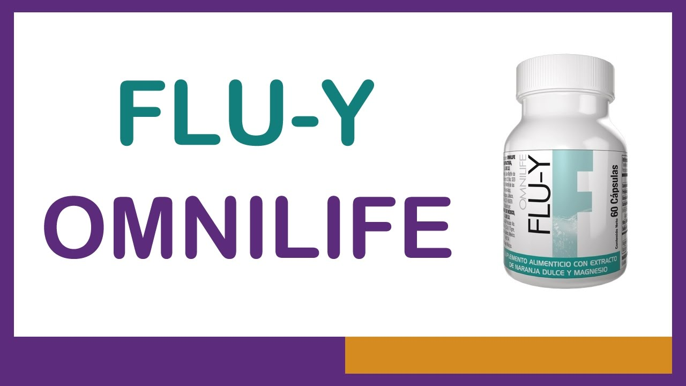

*Beneficios del FLU-Y*
• Relaja y reduce el estrés.
• Evita ansiedad e insomnio.
• Ayuda a combatir migrañas.
• Mejora y optimiza la capacidad de aprendizaje, aumento progresivo de la memoria
• mejora el estado de animo.

Flu-Y es un producto en formato de cápsulas con extracto de Naranja Dulce y Magnesio que promueve la reducción del estrés, asà como generar un estado de descanso.
Disminuye los niveles de estrés, genera relajación en esos momentos de tensión asà como la disminución de problemas de ansiedad, depresión y sensibilidad. Puedes adicionar STARBIEN para mejorar estados de animo relacionados con el estrés, ansiedad y depresión.
• Relaja y reduce el estrés.
• Evita ansiedad e insomnio.
• Ayuda a combatir migrañas.
• Mejora y optimiza la capacidad de aprendizaje, aumento progresivo de la memoria
• mejora el estado de animo.
Para contactarnos ya sea para algún tipo de consulta relacionada con el FLU-Y o algún otro producto de la familia de Omnilife y Seytu, puede realizarla a travez de este link que lo enviara a un chat de Whatsapp con nosotros y estaremos encantados de atenderlo.